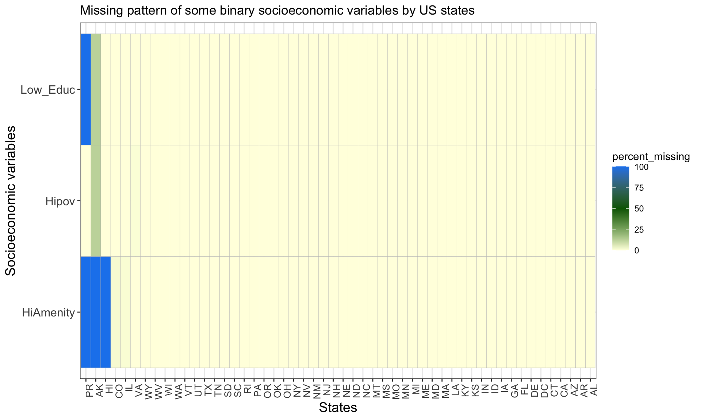
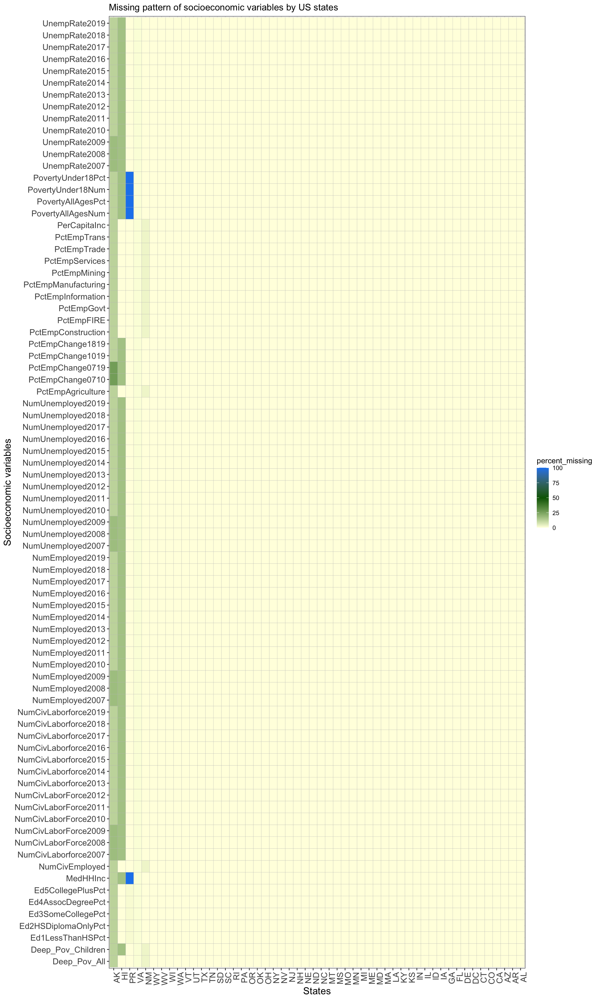

Chapter 4 Missing values
To identify the patterns of missing values, the following plots are useful. For both of the plots below, the x-axis contains the US states and the y-axis contains some socioeconomic variables, and the fill color represents the percentage of counties within a state that has missing values for the socioeconomic variable.
The objective of this project is to analyze socioeconomic status of all US counties; however, there are too many counties (3225 in total) to identify missing value patterns for each of them. Therefore, we decided to identify missing patterns for each state. Since each state might have a different percentage/number of counties with missing values, the fill color shows the percentage of missing values for a specific state and socioeconomic variable.
4.1 Missing pattern plots
4.1.1 Missing value pattern by state and three special binary variables
Based on the plot below, we conclude that most of the states do not have missing values; on the contrary, PR(Puerto Rico), AK(Alaska) and HI(Hawaii) have a significant number of missing values. This could be due to the fact that PR, HI and AK are far from the other states of the US; in addition, PR and HI are islands with very remote counties. Therefore, it could be hard to collect comprehensive data in these states, which results in the missing data.
CO(Colorado), IL(Illinois) and VA(Virgina) also have a very small percentage of missing values (< 2%) for no obvious reasons.

4.1.2 Missing value pattern by state and the rest of the variables
A similar pattern exists in the second plot: most of the states do not have any missing values. The states that have the most number of missing values match the ones observed from the first plot, including HI, AK, PR. While VA and NM(New Mexico) also have a small percentage of missing values.

4.2 Why separate the variables into two plots?
Note that the data is grouped by states, and the first row of each state group is the records for the state itself (not any county within the state). While examining the cleaned data, we noticed that three variables are special: HiPov, HiAmenity and Low_Education_2015_update. For the first row of every state group, these three variables are all missing values. This makes sense since they are binary variables describing characteristics of each county, and it should not have any value for the rows describing the overall state statistics. Therefore, for the first plot only, we removed the first row of each state group when plotting the missing value percentages.
Hence, the socioeconomic variables are separated into two sets: the three variables mentioned above and the other variables, based on which the two plots are created.
4.3 Additional justifications for the choice of plots
We did not plot the missing patterns with the data values since fill color already shows the percentage of counties with missing value for each state, and it could be confusing to have parts of the graph with fill representing the data values and other parts with fill being missing percentages.
The choice of having states on the x-axis and variables on the y-axis is for visualization purposes. Due to the large number of socioeconomic variables, the graph is better presented to have them on the y-axis.